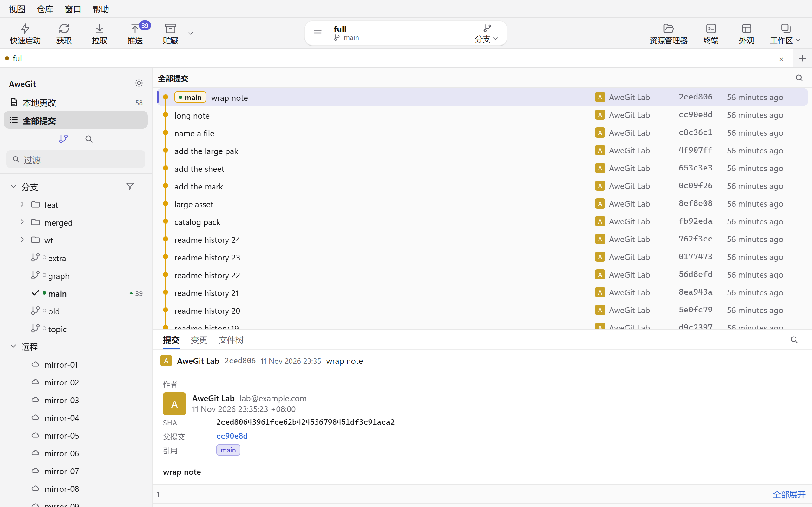
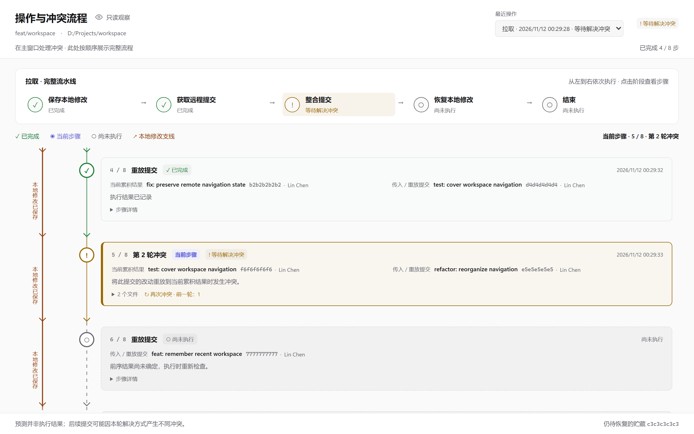
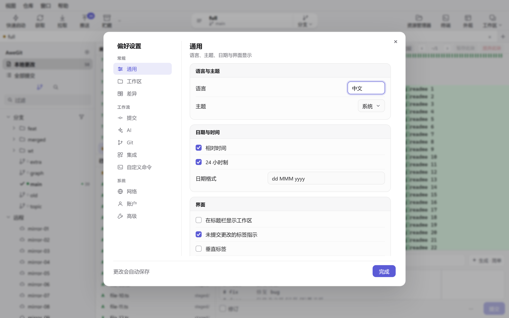

A local Git client. Status is read with gitoxide. Diffs, history, and writes go through the git on this machine. This page stays in the browser and is updated with the product.
下面是在试验台里截的真实窗口，不是示意图。截图使用经典白色主题和中文界面；程序还提供默认的 Apple Liquid Glass 和 VS Code 黑色，也可以切换到英文。
These are real windows captured in the lab. The shots use Classic White and Chinese; the app also offers Apple Liquid Glass by default, VS Code Dark, and an English interface.

历史：提交图、提交详情和侧栏。未推送、领先落后和远程缺失的分支都有标记。History: graph, commit detail, and sidebar. Unpushed commits, ahead/behind, and branches missing on the remote are marked.
A .fakeignore at the work-tree root uses .gitignore syntax. Matching files drop out of both change lists, and Git's own ignore rules stay as they are. It is on by default and can be turned off from the view menu. Right-click a file to add it. Stage-all and commit move matching staged files back out. Conflicts stay visible. Codex .tmp_artifact directories are also left out of the change list.
Each source folder can have an alias, such as Work or Personal. Clone and open start from that root. A workspace then keeps its own repositories, open tabs, and selected tab. Tabs can be renamed, colored, turned vertical, and reopened after close. The title bar can show the workspace name.
The left side is theirs and the right side is ours. One check keeps that side. Both checks concatenate them in order. A selection of conflict files can take the same side together. An external merge tool and a separate window are there too. The merge dialog names both branches and fills the message and the file list. A dirty work tree is stashed first. Resolve stays unavailable while a conflict is still unpicked.
对方 · topic
Theirs · topic
reward += daily
bonus = 0
自己 · main
Ours · main
reward += daily * streak
bonus = 1
操作与冲突流程
Operation pipeline
冲突停下时，整条流程仍然看得见
When a conflict stops the flow, the pipeline is still visible
When a pull, merge, rebase, cherry-pick, revert, or restore of local edits hits unresolved conflicts, AweGit opens a read-only operation pipeline window. The current branch or accumulated result sits on one side, the incoming commit or local edits on the other, and both flow into a central timeline. Each step is marked done, current, conflicted, or not run yet, and a long flow renders only the visible nodes. The window records each round's commits, base, files, blobs, commands, and timing, links repeated conflicts to earlier operations, and predicts later steps without treating a prediction as a result.
The log lives in the repository's Git directory and is kept for 3 days by default, adjustable to 1–90 days; an interrupted flow can be recovered. The window remembers its position, size, and maximized state. Auto-open and "close after every conflict is resolved" can be turned off in preferences, and the history stays available from the repository menu.

一次拉取的完整流水线：保存本地修改、获取远程提交、整合提交、恢复本地修改和结束。A pull pipeline: save local edits, fetch remote commits, integrate, restore local edits, finish.
The left column groups eleven tabs under General, Workflow, and System: General, Workspaces, Diff, Commit, AI, Git, Integrations, Commands, Network, Accounts, and Advanced. Each tab is split into cards for language, theme, date format, diff display, commit options, AI endpoint, proxies, certificates, accounts, and updates. Clicking outside does not close the panel; use the close button, Done, or Escape.
Ctrl+Alt+L 在中文和英文之间切换，独立的历史、文件内容、合并和流程窗口会同步换语言，同时保留正在查看的内容和编辑草稿。AI 未启用、接口未填写或后端报告缺少密钥时，点「生成提交说明」会跳到 AI 页签并定位到对应配置项。更新面板可以下载并启动安装包，静默安装默认开启。
Ctrl+Alt+L switches between Chinese and English. Separate history, file, merge, and pipeline windows follow the change while keeping what they are viewing and any draft. If AI is off, the endpoint is empty, or the backend reports a missing key, Generate commit message opens the AI tab and focuses the setting that needs attention. The update panel downloads and launches the installer, with silent install on by default.

通用页：语言、主题、日期与时间、界面。更改会自动保存。General: language, theme, dates and time, interface. Changes save automatically.
The subject has to read type: description. The types are feat, fix, docs, art, style, refactor, test, chore, perf, and revert. Typing fix: repair login moves fix into the selector and leaves the description. A full-width colon counts, and a repeated type is kept once. After something is staged, a short or long message can be generated. Right-click switches the length. Commit-and-push, amend, sign-off, signing, and skip-hooks are on the same box. Author and sign-off can belong to this repository only.
The graph can follow the current branch or every branch. Ahead and behind sit on the branch. A local branch the remote does not have is marked in history and in the sidebar. File history, blame, a file at one revision, and the reflog each open. Commits can be searched by message or by content. Image diffs include side by side, swipe, onion skin, and pixel difference.
Split view, syntax color, and the changed words marked inside the line. Whitespace can be shown or ignored, context can be shortened, and lines can wrap. Stage, discard, or copy a hunk. A large text file waits until you ask for the diff.
One commit shows its message, its changes, and its tree. Issue numbers in the message open on the web. Unpushed commits are marked. Branches you use often can be pinned in the sidebar.
These are the Windows keys. On macOS, every Ctrl combination becomes Command except Ctrl+Tab and Ctrl+Shift+Tab for tab switching; the arrow keys stay the same. Escape closes the current dialog. The terminal opens from the repository menu and has no shortcut.
刷新Refresh
F5 / Ctrl+R
提交Commit
Ctrl+Enter
提交并推送Commit and push
Ctrl+Shift+Enter
暂存或取消暂存Stage or unstage
Ctrl+Shift+S
全部暂存或全部取消暂存Stage all or unstage all
Ctrl+Alt+Shift+S
丢弃修改Discard changes
Delete / Ctrl+Shift+D / Backspace
全选当前列表或差异，再按一次取消Select the list or diff, press again to clear
Interactive rebase, cherry-pick, revert, and squash. Squash replays the commits after the range, and the range cannot contain a merge. Reset is soft, mixed, or hard. Bisect marks good and bad. A stash can take only the selected files, or grow a branch. When local edits block an action, stash them and retry.
Clone in the background, create a repository, or use Git Flow. Submodules and worktrees sit in the sidebar. LFS files can be listed, locked, and unlocked. Merged branches can be deleted together. A custom command can be shared or limited to one repository, and it can ask for a value. The SSH config can be edited here. Terminal and the file manager open from the repository menu.
Those dialogs remember prune, tags, and rebase. Push uses --force-with-lease unless you confirm a bare force push. A commit can push immediately, and a new tag can go with it. Pull can rebase. The depth used to scan a source folder is adjustable.
Accounts have their own page in preferences. Sign in to GitHub, GitLab, Bitbucket, Azure, Gitee, Gitea, or a self-hosted server. Accounts already signed in on this machine are read only when you click the sync button. Alibaba Cloud git remotes use codeup.aliyun.com, and sign-in opens the Alibaba Cloud account center. Each HTTPS remote uses the account for its host, and you can override that. Adding or editing a remote address shows the synced account that URL will use. Sign in with the system browser, or open the token page, paste a token, and test the connection. SSH remotes still use keys. Notifications and pull requests open in the window. A hosted repository can be created from here. HTTP and SOCKS proxies, certificates, and SSL verification stay on the Network page.
History, file contents, and merge can each have their own window. Quick launch searches commands and files. The command log separates your actions, background work, errors, and notices. About can copy diagnostics. A newer build can be downloaded and started. Fork settings can be imported.
When Git cannot replace or write a file, the command log lists each file and cause. On Windows an identified holder shows its process name and PID, with steps to save, close it, check for leftovers, refresh, and retry. Otherwise the hint covers locks, read-only attributes, and write permission. The original Git error is kept in full and can be copied.
Sidebar tags run newest first: annotated tags use the tag date and lightweight tags use the commit date. Directory groups sort by their newest tag and stay in date order inside. Local branches missing on the remote, unpushed commits, and ahead/behind counts are marked, and frequent branches can be pinned.
界面一直能点
The window stays usable
长列表只画窗口里的行。写操作按仓库排队，后台慢的时候界面先保持可操作。语言可以中文、英文或跟随系统。主题提供 Apple Liquid Glass（默认）、经典白色和 VS Code 黑色，也支持跟随系统。Windows 安装包自带 MinGit，macOS 使用系统 Git。
A long list draws the rows in the window. Writes queue per repository, so a slow git leaves the window usable. Language is Chinese, English, or the system. Choose Apple Liquid Glass (default), Classic White, VS Code Dark, or follow the system. Windows builds include MinGit. macOS uses the system Git.
Packages are published on GitHub Releases. The version manifest is latest.json at the root of the release branch.
Windows
NSIS 的 AweGit_<版本>_x64-setup.exe 和 MSI 使用同一个版本号。安装包自带 MinGit 2.56.0，日常操作不需要另装 Git。当前版本是 2.0.7。
The NSIS AweGit_<version>_x64-setup.exe and the MSI share one version number. The installer bundles MinGit 2.56.0, so no separate Git is needed. The current version is 2.0.7.
macOS
在 Mac 上运行 pnpm package:mac，或从 Releases 下载磁盘镜像，产物在 target/release/bundle。macOS 使用系统 Git，不打包 MinGit。没有 Developer ID 签名时安装包未签名、未公证，需要在系统设置中允许打开。
Run pnpm package:mac on a Mac or download the disk image from Releases; the bundle is under target/release/bundle. macOS uses the system Git and does not bundle MinGit. Without a Developer ID the build is unsigned and not notarized, so macOS asks you to allow it in System Settings.
Updates read the version from latest.json, download and launch the installer, with silent install on by default. Settings live at %APPDATA%\AweGit\settings.json on Windows and ~/Library/Application Support/AweGit/settings.json on macOS. API keys, proxy passwords, and tokens go to the OS credential store, leaving those fields empty in the file.